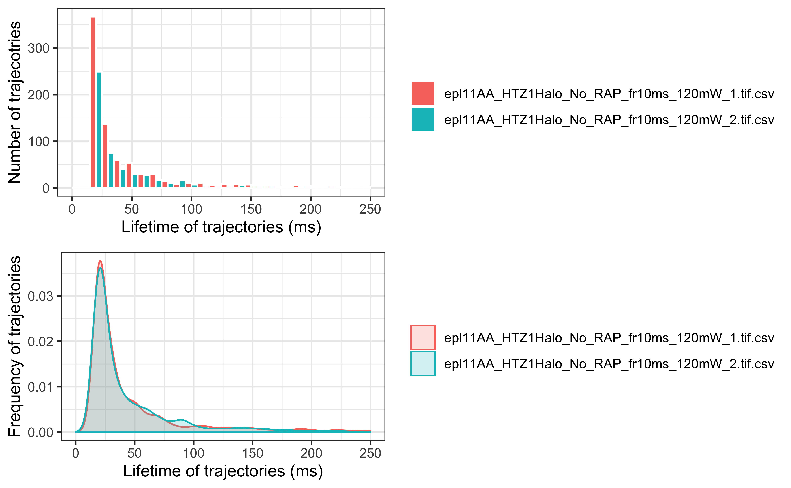
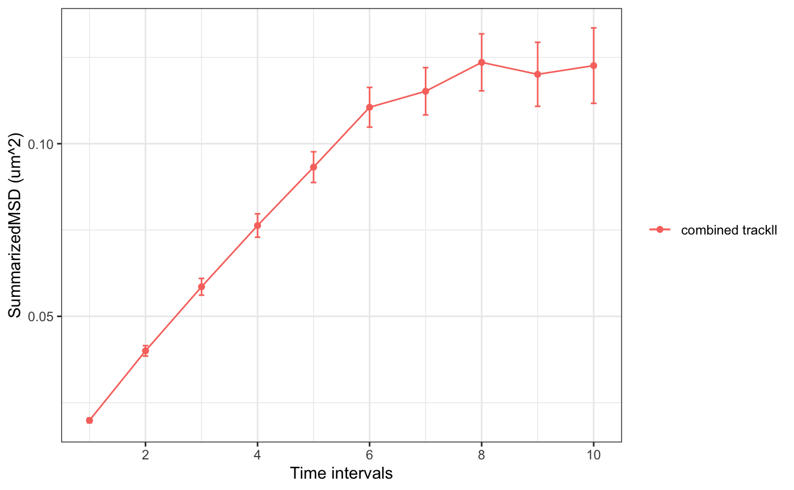
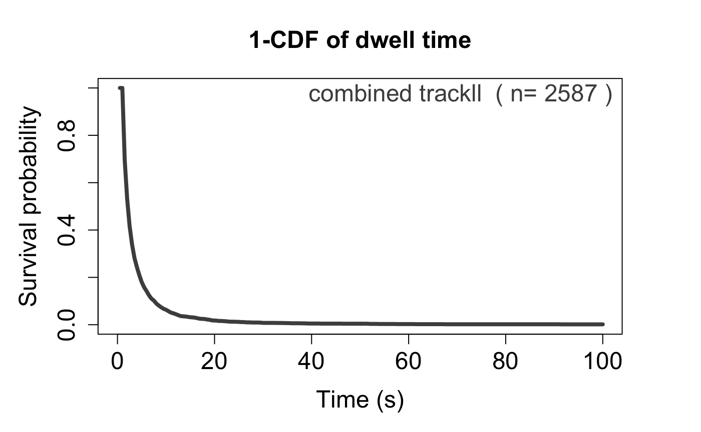
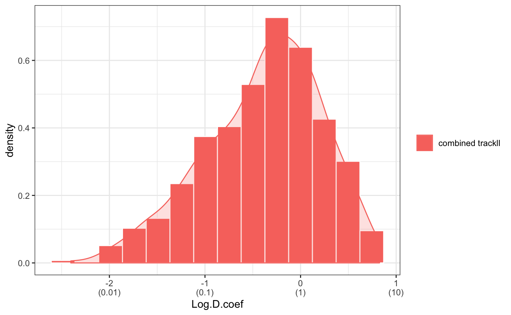
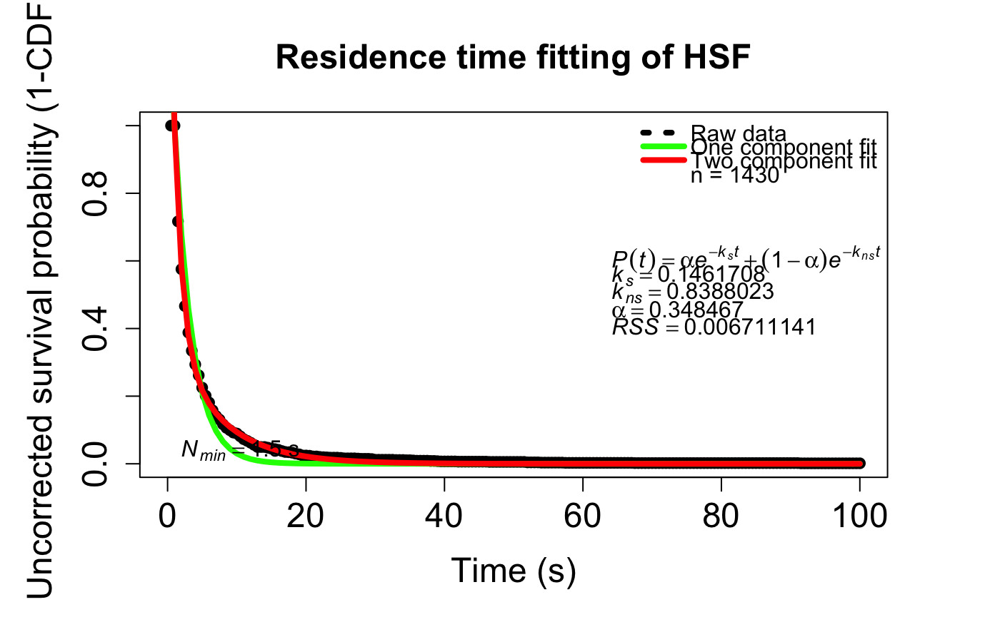

Sojourner: an R package for statistical analysis of single molecule trajectories
Sheng Liu
Department of Biology, Krieger School of Arts and Sciences, Johns Hopkins UniversitySun Jay Yoo
Department of Biomedical Engineering, Johns Hopkins UniversityXiaona Tang
Department of Biology, Krieger School of Arts and Sciences, Johns Hopkins UniversityYoung Soo Sung
Department of Computer Science, Johns Hopkins UniversityCarl Wu
Department of Molecular Biology and Genetics, School of Medicine, Johns Hopkins University2020-05-09
Source:vignettes/sojourner-vignette.Rmd
sojourner-vignette.Rmd
Introduction
A basic task in 2D single molecule tracking is to determine diffusion coefficient from molecule trajectories identified after initial image data acquisition. The trajectory (term used interchangeably with “tracks”) of a molecule is presented as a table of \(x\),\(y\)-coordinates in the unit of pixel, which then can be converted to other measurement, such as \(\mu\)m, according to the resolution of the camera. The sojourner package provides methods to import/export, process, and analyze such data. Analysis techniques include the diffusion coefficient using the mean square displacement (MSD), displacement cumulative distribution function (CDF), as well as hidden Markov model (HMM) methods (in next release) from such input data. This vignette covers basic usage of the package.
Installation
Using BiocManager:
if(!requireNamespace("BiocManager", quietly = TRUE))
install.packages("BiocManager")
BiocManager::install("sojourner")Or, using the release version from GitHub:
To load the package:
## Registered S3 method overwritten by 'R.oo':
## method from
## throw.default R.methodsS3Basic Track Data Structure
The input file for sojourner is the Diatrack (.txt or .mat), ImageJ Particle Tracker (.csv), SLIMfast (.txt), or u-track (.mat) output file. Tracks are extracted from the output files and then stored in a trackll, a list of track lists. A track denotes a single trajectory stored in a data.frame recording \(x\), \(y\), \(z\) and (video) frame number. A trackl track list is a collection of track data from one video file output. Lastly, a “trackll” is a collection of “trackl” in one folder.
In this example, the folder “SWR1_2” contains one track list with 207 tracks and one track list with 139 tracks:
folder=system.file("extdata","SWR1_2",package="sojourner")
trackll = createTrackll(folder=folder, input=3)## List of 2
## $ SWR1_WT_140mW_image6.csv:List of 207
## ..$ mage6.1.4.1.1 :'data.frame': 4 obs. of 4 variables:
## ..$ mage6.2.2.2.2 :'data.frame': 2 obs. of 4 variables:
## .. [list output truncated]
## $ SWR1_WT_140mW_image7.csv:List of 139
## ..$ mage7.1.2.1.1 :'data.frame': 2 obs. of 4 variables:
## ..$ mage7.1.9.2.2 :'data.frame': 9 obs. of 4 variables:
## .. [list output truncated]Multiple folders can also be stored in a single trackll. Here, trackll denotes a list of folders, and each trackl contains all tracks from every file in the folder. This structure can be constructed as such:
# Construct trackll from data.frame
trackl=list(track_1=dataframe_1,
track_2=dataframe_2,
track_3=dataframe_3,
...
track_n=dataframe_n)
trackll=list(FOLDER_1=trackl_1,
FOLDER_2=trackl_2,
FOLDER_3=trackl_3,
...
FOLDER_n=trackl_n,)Merging all tracks from every file in the folder into a single trackl in a trackll can also be done through mergeTracks(). In this example, both track lists from “SWR1_2” were merged together to form a list of 346 tracks.
folder=system.file("extdata","SWR1_2",package="sojourner")
trackll = createTrackll(folder=folder, input=3)
trackll <- mergeTracks(folder=folder, trackll=trackll)## List of 1
## $ SWR1_2:List of 346
## ..$ mage6.1.4.1.1 :'data.frame': 4 obs. of 4 variables:
## ..$ mage6.2.2.2.2 :'data.frame': 2 obs. of 4 variables:
## .. [list output truncated]To see the coordinates of an individual track:
# Specify the folder name and the track name
trackll[["SWR1_2"]]["mage6.1.4.1.1"]
# Alternatively, specify the index of the folder and the track
# trackll[[1]][1]## $mage6.1.4.1.1
## x y z Frame
## 1 40.32 49.36 1 1
## 2 41.03 47.33 1 2
## 3 41.05 48.43 1 3
## 4 40.90 49.09 1 4Track Data Manipulation
sojourner provides tools to manage and manipulate track data. Below are a few examples of the commonly used functions to import, process, and export single molecule track data.
Reading Track Data
First, read in track data taken from Diatrack, ImageJ Particle Tracker, SLIMfast, or u-track. In this example, we read data from ImageJ .csv-formatted files from “SWR1_2”.
# Designate a folder and then create trackll from ImageJ .csv data
folder=system.file("extdata","SWR1_2",package="sojourner")
trackll = createTrackll(folder=folder, input=3)
# Alternatively, use interact to open file browser and select input data type
# trackll = createTrackll(interact = TRUE)##
## Reading ParticleTracker file: SWR1_WT_140mW_image6.csv ...
##
## mage6 read and processed.
##
## Reading ParticleTracker file: SWR1_WT_140mW_image7.csv ...
##
## mage7 read and processed.
##
## Process complete.Processing Track Data
Linking Skipped Frames
Different tracking softwares (Diatrack, ImageJ Particle Tracker, SLIMfast, u-track) often use varying algorithms to stitch together single molecule localizations into trajectories. Sometimes, a molecule can disappear for several frames and can classify single trajectories as two. linkSkippedFrames() allows users to link trajectories that skip (or do not appear for) a number of frames. In this example, all tracks that skip a maximum of 10 frames and reappear within 5 pixels are linked:
# Basic function call of linkSkippedFrames
trackll.linked <- linkSkippedFrames(trackll, tolerance = 5, maxSkip = 10)##
## Linking mage6 ...
##
## 156 links found in mage6
##
## Linking mage7 ...
##
## 112 links found in mage7
##
## Process complete.Filtering Tracks by Length
filterTrack() can be used to filter out track that have lengths (defined by number of frames) that fall within a specified range. In this example, only tracks that appear for at least 7 frames are kept:
## applying filter, min 7 max Inf# See the min and max length of the trackll
# trackLength() is a helper function output track length of trackll
lapply(trackLength(trackll),min)## $SWR1_WT_140mW_image6.csv
## [1] 2
##
## $SWR1_WT_140mW_image7.csv
## [1] 2## $SWR1_WT_140mW_image6.csv
## [1] 7
##
## $SWR1_WT_140mW_image7.csv
## [1] 7Trim Tracks to a Length
trimTrack() is used to to trim/cutoff tracks. Given a specified range of track lengths (defined by number of frames), only tracks that fall within the range are kept, otherwise trimmed to the upper limit. In this example, all tracks with lengths greater than 20 have their lengths trimmed to 20:
## applying trimmer, min 1 max 20# See the min and max length of the trackll
# trackLength() is a helper function output track length of trackll
lapply(trackLength(trackll),max)## $SWR1_WT_140mW_image6.csv
## [1] 30
##
## $SWR1_WT_140mW_image7.csv
## [1] 15## $SWR1_WT_140mW_image6.csv
## [1] 20
##
## $SWR1_WT_140mW_image7.csv
## [1] 15Applying Image Masks
In order to apply a binary image mask to track data, one can use maskTracks(). In this example, we use image masks for each track file generated by thresholding the initial fluorescent glow of the nucleus. See man pages for indexCell(), filterOnCell(), and sampleTracks() for more advanced functionality (e.g. separating tracks, filtering, and sampling by masked cells).
# Basic masking with folder path with image masks
folder = system.file("extdata","ImageJ",package="sojourner")
trackll = createTrackll(folder, input = 3)
trackll.filter=filterTrack(trackll ,filter=c(7,Inf))
trackll.masked <- maskTracks(folder = folder, trackll = trackll.filter)To plot the masks:
To plot the nuclear overlay of the un-masked data:
To plot the nuclear overlay of the masked data:
Exporting Track Data
To export a trackll, use exportTrackll() to save track data into a .csv file in the working directory. This function saves the data into the same format used by ImageJ Particle Tracker, fully preserving all track information, and maintaining short read/write computation time and readability in Excel/etc.
Plotting Tracks
The first thing one may want to do is to see how the tracks look like in 2-D space. The track name is useful in this case if one wants to see specific trajectories and its associated movies.
All one needs to do is to create a .csv file contains trajectory names in its first column. sojourner package contains such an example .csv file.
# specify the path of the file containing trajectory index names, index file
index.file2=system.file("extdata","INDEX","indexFile2.csv",
package="sojourner")
# specify the folders containing the output files
folder1=system.file("extdata","SWR1",package="sojourner")
folder2=system.file("extdata","HTZ1",package="sojourner")
# plot trajectories specified in the trajectory index file
plotTrackFromIndex(index.file=index.file2,
movie.folder=c(folder1,folder2),input=3)The output plots the tracks based on its name, with the information contained in its name (i.e. start frame and length/duration), one can also pull out its movie. See ? plotTrack for more plotting options.
Distribution of Trajectory Lengths
One may be interested to see the distribution of the (time) length of the tracks. This can be done by calculating and plotting the dwell times:

Calculating Diffusion Coefficient Using MSD-Based Method
Below is an example of simple analysis workflow using diffusion coefficient.
Data Import
We will need to first create a basic data structure (trackll, i.e. list of track list) for all analysis. It contains the trajectory information of all tracks in a specified folder, using createTrackll() function.
Data Clean Up
We then clean up the data with filters and masks. In this case, we select only the tracks with 3 frames or more, and remove tracks that is outside of the nuclei.
Visulization of Trajectories
To see how the tracks look like, we can plot the tracks over cell image (e.g. bright field image or nuclei overall fluorescence) to see the distribution of tracks.
# Overlay all tracks on nuclei
plotNucTrackOverlay(folder=folder,trackll=trackll.fi,cores=1, max.pixel=128,nrow=2,ncol=2,width=16,height=16)# Overlay tracks after nuclear mask
plotNucTrackOverlay(folder=folder,trackll=trackll.fi.ma,cores=1, max.pixel=128,nrow=2,ncol=2,width=16,height=16)# Overlay tracks color coded for diffusion coefficient
plotTrackOverlay_Dcoef(trackll=trackll.fi.ma, Dcoef.range=c(-2,1), rsquare=0.8, t.interval=0.01, dt=6, resolution=0.107)We used Dcoef.range to select tracks whose Dcoef is within the range. Other tracks will not be plotted.
Analysis
We then move on to the analysis of the biophysical properties of a molecule, e.g. mean square displacement (MSD), diffusion coefficient (Dcoef), residence time (RT) etc.
For an overall view of one factor, we may want to merge all tracks in a folder.
# Merge tracks from different image files in the folder
trackll.fi.ma.me=c(mergeTracks(folder, trackll.fi.ma))And sometimes, we may have data of same type in multiple folders and want to combine them together.
folder2=system.file('extdata','HSF_2',package='sojourner')
trackll2=createTrackll(folder2,input=2, cores = 1)
trackll2=maskTracks(folder2,trackll2)
trackll2=mergeTracks(folder2,trackll2)
# Combine the tracklls together
Trackll.combine=combineTrackll(trackll=c(trackll,trackll2),merged=TRUE)Now we can calculate msd, Dcoef, and residence time of a molecule.
# calculate MSD for all tracks longer than 3 frames
msd(Trackll.combine,dt=20,resolution=0.107,summarize=TRUE,cores=1,plot=TRUE,output=TRUE)
For some analysis, we may just want to a portion of the trajectory, this can be done by using trimTrack() function.
trackll.combine.trim=trimTrack(Trackll.combine,trimmer=c(1,11))
msd(trackll.combine.trim,dt=10,resolution=0.107,summarize=TRUE,cores=1,plot=TRUE,output=TRUE)Dcoef(trackll=trackll.combine.trim,dt=5, filter=c(min=6,max=Inf), method="static", plot=TRUE, output=TRUE)
## calculating displacement CDF
# Calculate all dislacement frequency and displacement CDF for all tracks longer than 3 frames
displacementCDF(trackll.combine.trim, dt=1, plot=TRUE, output=TRUE)## Analysis for Residence time.
# Calculate 1-CDF (survival probability) of the dwell time/residence time of all tracks (not trimmed) longer than 3 frames
compare_RT_CDF(trackll= Trackll.combine, x.max=100, filter=c(min=3,max=Inf), t.interval=0.5, output=FALSE)# Calculate residence time of tracks by 2-component exponential decay fitting of the 1-CDF curve
fitRT(trackll= trackll.fi.ma.me, x.max=100, N.min=1.5, t.interval=0.5)
This is just a brief example of analysis one can do using the statistic tools provided in sojourner package. Further information regarding function usage or analysis techniques can be found in function help docs and on https://sheng-liu.github.io/sojourner/ website.
sojournerGUI: A Shiny Interface
A Shiny app implementation of many of the core features of sojourner. Namely, the basic abilities of reading trackll video files (of all supported types), processing tracks (linking, filtering, trimming, masking, merging), and analyzing tracks (MSD, Dcoef, CDF, and dwell time). The application interface provides a code-free GUI, suited with dynamic and interactive plots, that is relatively easy to use. The app is still in alpha development and only supports the base functions needed for educational capabilities and such. A command history log, named command_history.R in the working directory, will be continuously updated each time a command is called for diagnostic, replication, and tracking purposes.
Helpful Tips
If in doubt, check the console output of each command inputted through the GUI. These will show error and warning messages as needed.
Normal distribution, compare folder, and kernel density masking features are currently not supported.
Reading tracks depends on a running session of R, as it uses its native
file.choose()function.
SessionInfo
Here is the sessionInfo() on which this document was compiled:
## R version 3.6.0 (2019-04-26)
## Platform: x86_64-apple-darwin15.6.0 (64-bit)
## Running under: macOS High Sierra 10.13.6
##
## Matrix products: default
## BLAS: /Library/Frameworks/R.framework/Versions/3.6/Resources/lib/libRblas.0.dylib
## LAPACK: /Library/Frameworks/R.framework/Versions/3.6/Resources/lib/libRlapack.dylib
##
## locale:
## [1] en_CA.UTF-8/en_CA.UTF-8/en_CA.UTF-8/C/en_CA.UTF-8/en_CA.UTF-8
##
## attached base packages:
## [1] stats graphics grDevices utils datasets methods base
##
## other attached packages:
## [1] sojourner_1.1.4 BiocStyle_2.13.2
##
## loaded via a namespace (and not attached):
## [1] segmented_1.0-0 pixmap_0.4-11 bitops_1.0-6
## [4] fs_1.3.1 EBImage_4.27.0 RColorBrewer_1.1-2
## [7] rprojroot_1.3-2 tools_3.6.0 backports_1.1.4
## [10] R6_2.4.0 lazyeval_0.2.2 BiocGenerics_0.31.5
## [13] colorspace_1.4-1 raster_2.9-23 npsurv_0.4-0
## [16] sp_1.3-1 tidyselect_0.2.5 gridExtra_2.3
## [19] compiler_3.6.0 xml2_1.2.2 shinyjs_1.0
## [22] desc_1.2.0 labeling_0.3 bookdown_0.12
## [25] scales_1.0.0 hexbin_1.27.3 pkgdown_1.3.0
## [28] stringr_1.4.0 digest_0.6.20 tiff_0.1-5
## [31] fftwtools_0.9-8 mixtools_1.1.0 rmarkdown_1.14
## [34] R.utils_2.9.0 jpeg_0.1-8 pkgconfig_2.0.2
## [37] htmltools_0.3.6 htmlwidgets_1.3 rlang_0.4.0
## [40] rstudioapi_0.10 shiny_1.3.2 zoo_1.8-6
## [43] mclust_5.4.5 dplyr_0.8.3 R.oo_1.22.0
## [46] RCurl_1.95-4.12 magrittr_1.5 nls2_0.2
## [49] R.matlab_3.6.2 Matrix_1.2-17 Rcpp_1.0.2
## [52] munsell_0.5.0 abind_1.4-5 R.methodsS3_1.7.1
## [55] stringi_1.4.3 yaml_2.2.0 MASS_7.3-51.4
## [58] plyr_1.8.4 grid_3.6.0 parallel_3.6.0
## [61] promises_1.0.1 crayon_1.3.4 rasterVis_0.46
## [64] lattice_0.20-38 splines_3.6.0 locfit_1.5-9.1
## [67] knitr_1.24 pillar_1.4.2 boot_1.3-23
## [70] reshape2_1.4.3 codetools_0.2-16 glue_1.3.1
## [73] evaluate_0.14 lsei_1.2-0 latticeExtra_0.6-28
## [76] data.table_1.12.2 BiocManager_1.30.4 png_0.1-7
## [79] httpuv_1.5.1 gtable_0.3.0 purrr_0.3.4
## [82] assertthat_0.2.1 sampSurf_0.7-4 ggplot2_3.2.1
## [85] xfun_0.8 mime_0.7 xtable_1.8-4
## [88] roxygen2_7.1.0 later_0.8.0 survival_2.44-1.1
## [91] viridisLite_0.3.0 minpack.lm_1.2-1 truncnorm_1.0-8
## [94] tibble_2.1.3 mltools_0.3.5 memoise_1.1.0
## [97] fitdistrplus_1.0-14 rtiff_1.4.6